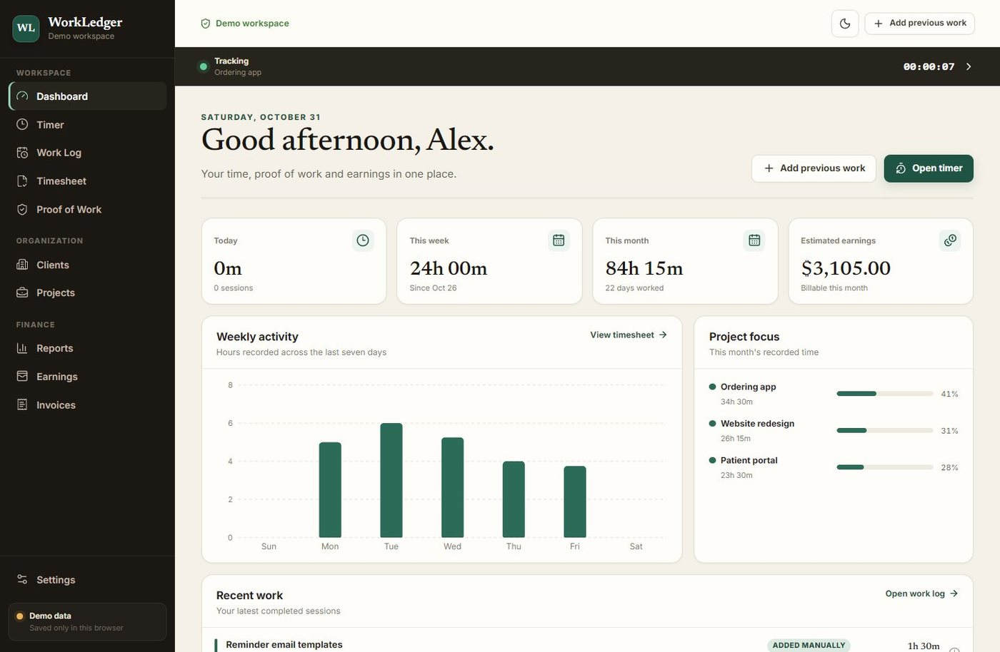
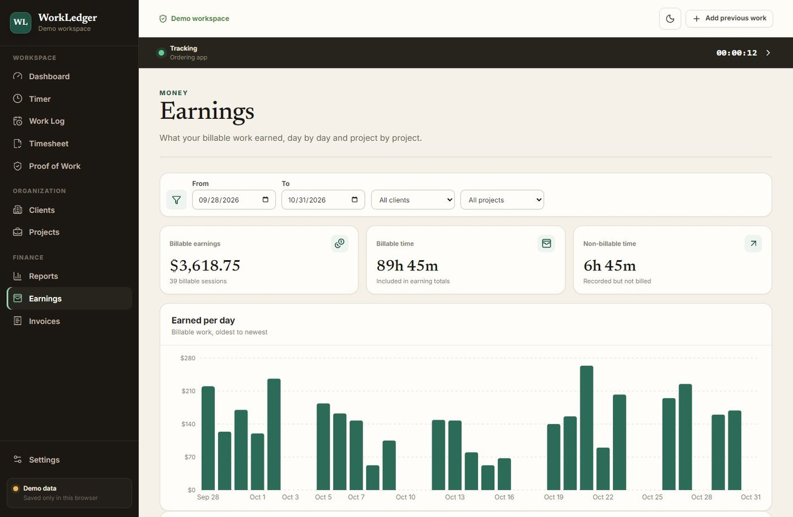
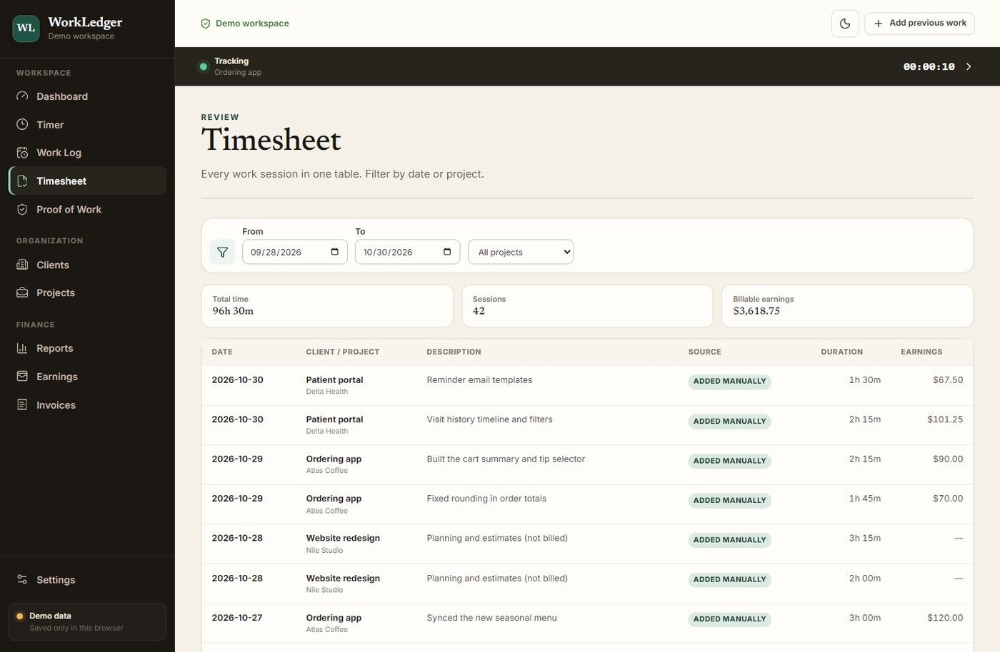
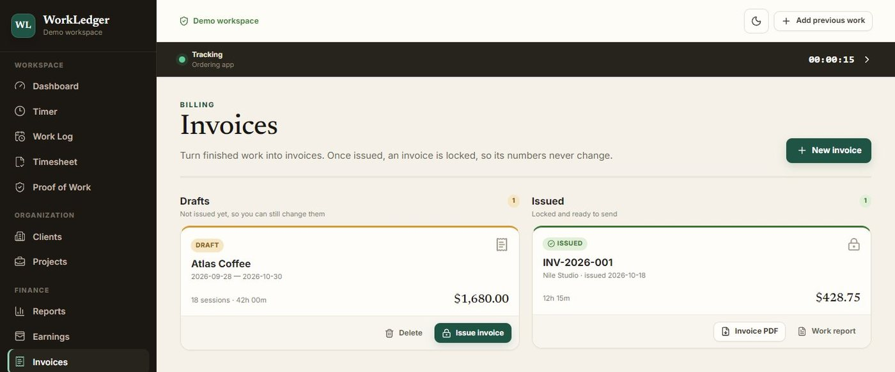

One source of truth
Everything starts as a work session. The dashboard, timesheet, earnings and invoices are views of those sessions, so every total traces back to the same records.
A private time-tracking and invoicing app I built for my own hourly contract work. Every screen, from the timesheet to the invoice PDF, comes from one record of work sessions.

Tracking time, keeping proof of the work and writing invoices usually means entering the same hours in several places, and the totals drift apart.
WorkLedger starts from one rule: you never re-enter time just to see it a different way. A work session is recorded once, and everything else is built from it.
React and strict TypeScript on Vite. Records live in IndexedDB as a fast local cache and sync to a private Cloudflare D1 database; evidence files go to R2. Screens never touch the database directly. They go through services, which keeps the business rules testable.
Everything starts as a work session. The dashboard, timesheet, earnings and invoices are views of those sessions, so every total traces back to the same records.
Time is stored in seconds and money in cents. Each session's amount is rounded once and then summed, so the dashboard and the invoice always agree.
Issuing an invoice freezes the client, rates, lines and totals. Renaming a client or changing a rate later can't rewrite what was billed.
A tracked session is a list of start and stop segments, not a running counter. Pausing is exact, and closing the tab doesn't lose time.
Version 1 kept everything in the browser with explicit backups. When I needed the same ledger on every device, the cloud release added D1 and R2, and kept IndexedDB as the offline safety net.



Screens show sample data.
Animations are off because your device is set to reduce motion.